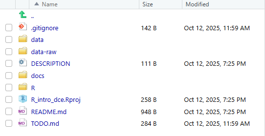

Code
getwd()A key step in setting up a reproducible workflow in R is to organise your work using R Projects. An R Project creates a self-contained working directory with all your scripts, data, and results in one place. This makes your work easier to navigate, share, and reproduce — especially when collaborating with others. Even though collaboration may not be relevant to you at this stage, you will definitely benefit from organising data, R code, results etc. in a clear structure. An elegant feature of an R Project is the self-contained working directory. Let’s dive a bit into that.
Every time you use R, it operates from a specific working directory — the folder where R looks for files to read and where it saves files you create.
You can think of it as R’s “current location” on your computer.
You can check your current working directory by typing:
getwd()However, the current working directory may not be the place where your data is stored. For example, maybe your data is stored in a folder called data_raw.
Then you must write the full path, such as:
data <- read.csv("C:/Users/YourName/Documents/my_project/data_raw/my_data.csv") or change the working directory manually using:
setwd("C:/Users/YourName/Documents/my_project/data_raw/")and then read the file using:
data <- read.csv("my_data.csv") But what if you want to save some processed data in another folder called data_wrangled?
Then you again need to either write the full path or change the working directory before saving the data.
Constantly setting or changing the working directory can be confusing and error-prone.
It also means your code will only work on your computer — anyone else running it will have to edit all the file paths.
What about an R Project then?
When you open an R Project, R automatically sets the working directory to the project folder.
This makes file paths simpler and more reliable — for example, you can refer to files within the project using relative paths like:
data <- read.csv(here::here("data_raw/my_data.csv"))and save this into another folder like:
write.csv(data_wrangled, here::here("data_wrangled/data_wrangled.csv"))This approach makes your code portable — it will work on any computer where the R Project is opened.
There is no single best way to organise a project folder. You can simply make an R Project and specify the folders you would like. You can also use some predefined project structures, for instance, the one from prodigenr.
Therefore, you must first install the package prodigenr. We will cover packages in the next session. For now, write the following in your console:
install.packages("prodigenr")To create the project, do the following:
Name the project R_intro_dce.
Save it on your Desktop.
Open the folder R_intro_dce and open R_intro_dce.Rproj
You will see the following structure:

data-raw is where you store your raw data (data that should not be overwritten)
data is where you store your processed data
docs is where you save your reports (e.g., HTML files, PDF-files, Word documents), which essentially could be your entire manuscript. For this, you will use R Markdown/Quarto. This will not be covered in this course.
R is the folder to save all your R code, whether it is an R Script, R Markdown, or Quarto files.
The files related to git will not be covered in this course.